Platonic solids¶
EXAMPLES: The five platonic solids in a row:
sage: G = tetrahedron((0,-3.5,0), color='blue') + cube((0,-2,0),color=(.25,0,.5))
sage: G += octahedron(color='red') + dodecahedron((0,2,0), color='orange')
sage: G += icosahedron(center=(0,4,0), color='yellow')
sage: G.show(aspect_ratio=[1,1,1])
>>> from sage.all import *
>>> G = tetrahedron((Integer(0),-RealNumber('3.5'),Integer(0)), color='blue') + cube((Integer(0),-Integer(2),Integer(0)),color=(RealNumber('.25'),Integer(0),RealNumber('.5')))
>>> G += octahedron(color='red') + dodecahedron((Integer(0),Integer(2),Integer(0)), color='orange')
>>> G += icosahedron(center=(Integer(0),Integer(4),Integer(0)), color='yellow')
>>> G.show(aspect_ratio=[Integer(1),Integer(1),Integer(1)])
All the platonic solids in the same place:
sage: G = tetrahedron(color='blue',opacity=0.7)
sage: G += cube(color=(.25,0,.5), opacity=0.7)
sage: G += octahedron(color='red', opacity=0.7)
sage: G += dodecahedron(color='orange', opacity=0.7) + icosahedron(opacity=0.7)
sage: G.show(aspect_ratio=[1,1,1])
>>> from sage.all import *
>>> G = tetrahedron(color='blue',opacity=RealNumber('0.7'))
>>> G += cube(color=(RealNumber('.25'),Integer(0),RealNumber('.5')), opacity=RealNumber('0.7'))
>>> G += octahedron(color='red', opacity=RealNumber('0.7'))
>>> G += dodecahedron(color='orange', opacity=RealNumber('0.7')) + icosahedron(opacity=RealNumber('0.7'))
>>> G.show(aspect_ratio=[Integer(1),Integer(1),Integer(1)])
Display nice faces only:
sage: icosahedron().stickers(['red','blue'], .075, .1)
Graphics3d Object
>>> from sage.all import *
>>> icosahedron().stickers(['red','blue'], RealNumber('.075'), RealNumber('.1'))
Graphics3d Object
AUTHORS:
Robert Bradshaw (2007, 2008): initial version
William Stein
- sage.plot.plot3d.platonic.cube(center=(0, 0, 0), size=1, color=None, frame_thickness=0, frame_color=None, **kwds)[source]¶
A 3D cube centered at the origin with default side lengths 1.
INPUT:
center– (default: (0,0,0))size– (default: 1) the side lengths of the cubecolor– string that describes a color; this can also be a list of 3-tuples or strings length 6 or 3, in which case the faces (and oppositive faces) are coloredframe_thickness– (default: 0) if positive, then thickness of the frameframe_color– (default:None) if given, gives the color of the frameopacity– (default: 1) if less than 1 then it’s transparent
EXAMPLES:
A simple cube:
sage: cube() Graphics3d Object
>>> from sage.all import * >>> cube() Graphics3d Object
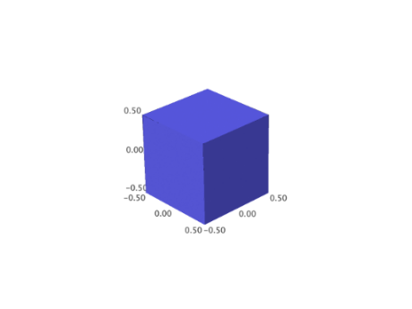 A red cube:
sage: cube(color='red') Graphics3d Object
>>> from sage.all import * >>> cube(color='red') Graphics3d Object

A transparent grey cube that contains a red cube:
sage: cube(opacity=0.8, color='grey') + cube(size=3/4) Graphics3d Object
>>> from sage.all import * >>> cube(opacity=RealNumber('0.8'), color='grey') + cube(size=Integer(3)/Integer(4)) Graphics3d Object
A transparent colored cube:
sage: cube(color=['red', 'green', 'blue'], opacity=0.5) Graphics3d Object
>>> from sage.all import * >>> cube(color=['red', 'green', 'blue'], opacity=RealNumber('0.5')) Graphics3d Object
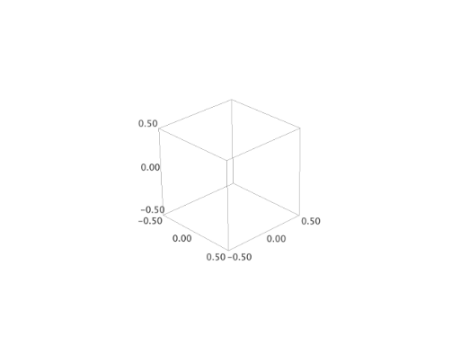 A bunch of random cubes:
sage: v = [(random(), random(), random()) for _ in [1..30]] sage: sum([cube((10*a,10*b,10*c), size=random()/3, color=(a,b,c)) for a,b,c in v]) Graphics3d Object
>>> from sage.all import * >>> v = [(random(), random(), random()) for _ in (ellipsis_range(Integer(1),Ellipsis,Integer(30)))] >>> sum([cube((Integer(10)*a,Integer(10)*b,Integer(10)*c), size=random()/Integer(3), color=(a,b,c)) for a,b,c in v]) Graphics3d Object
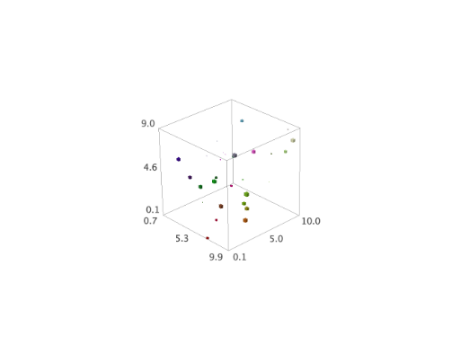 Non-square cubes (boxes):
sage: cube(aspect_ratio=[1,1,1]).scale([1,2,3]) Graphics3d Object
>>> from sage.all import * >>> cube(aspect_ratio=[Integer(1),Integer(1),Integer(1)]).scale([Integer(1),Integer(2),Integer(3)]) Graphics3d Object
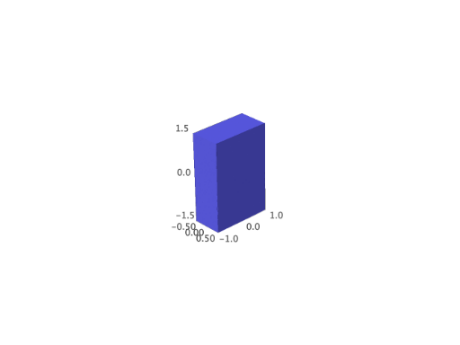 sage: cube(color=['red', 'blue', 'green'],aspect_ratio=[1,1,1]).scale([1,2,3]) Graphics3d Object
>>> from sage.all import * >>> cube(color=['red', 'blue', 'green'],aspect_ratio=[Integer(1),Integer(1),Integer(1)]).scale([Integer(1),Integer(2),Integer(3)]) Graphics3d Object
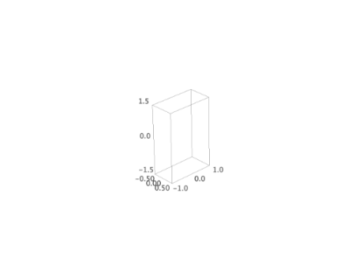 And one that is colored:
sage: cube(color=['red', 'blue', 'green', 'black', 'white', 'orange'], ....: aspect_ratio=[1,1,1]).scale([1,2,3]) Graphics3d Object
>>> from sage.all import * >>> cube(color=['red', 'blue', 'green', 'black', 'white', 'orange'], ... aspect_ratio=[Integer(1),Integer(1),Integer(1)]).scale([Integer(1),Integer(2),Integer(3)]) Graphics3d Object
A nice translucent color cube with a frame:
sage: c = cube(color=['red', 'blue', 'green'], frame=False, frame_thickness=2, ....: frame_color='brown', opacity=0.8) sage: c Graphics3d Object
>>> from sage.all import * >>> c = cube(color=['red', 'blue', 'green'], frame=False, frame_thickness=Integer(2), ... frame_color='brown', opacity=RealNumber('0.8')) >>> c Graphics3d Object
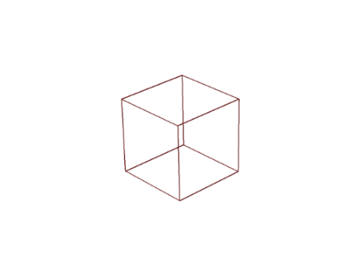 A raytraced color cube with frame and transparency:
sage: c.show(viewer='tachyon')
>>> from sage.all import * >>> c.show(viewer='tachyon')
This shows upstream Issue #11272 has been fixed:
sage: cube(center=(10, 10, 10), size=0.5).bounding_box() ((9.75, 9.75, 9.75), (10.25, 10.25, 10.25))
>>> from sage.all import * >>> cube(center=(Integer(10), Integer(10), Integer(10)), size=RealNumber('0.5')).bounding_box() ((9.75, 9.75, 9.75), (10.25, 10.25, 10.25))
AUTHORS:
William Stein
- sage.plot.plot3d.platonic.dodecahedron(center=(0, 0, 0), size=1, **kwds)[source]¶
A dodecahedron.
INPUT:
center– (default: (0,0,0))size– (default: 1)color– string that describes a color; this can also be a list of 3-tuples or strings length 6 or 3, in which case the faces (and oppositive faces) are coloredopacity– (default: 1) if less than 1 then is transparent
EXAMPLES: A plain Dodecahedron:
sage: dodecahedron() Graphics3d Object
>>> from sage.all import * >>> dodecahedron() Graphics3d Object
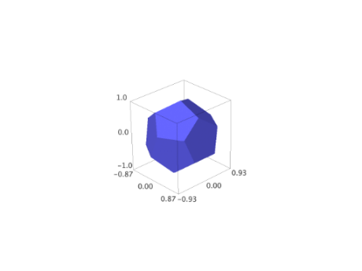 A translucent dodecahedron that contains a black sphere:
sage: G = dodecahedron(color='orange', opacity=0.8) sage: G += sphere(size=0.5, color='black') sage: G Graphics3d Object
>>> from sage.all import * >>> G = dodecahedron(color='orange', opacity=RealNumber('0.8')) >>> G += sphere(size=RealNumber('0.5'), color='black') >>> G Graphics3d Object
CONSTRUCTION: This is how we construct a dodecahedron. We let one point be \(Q = (0,1,0)\).
Now there are three points spaced equally on a circle around the north pole. The other requirement is that the angle between them be the angle of a pentagon, namely \(3\pi/5\). This is enough to determine them. Placing one on the \(xz\)-plane we have.
\(P_1 = \left(t, 0, \sqrt{1-t^2}\right)\)
\(P_2 = \left(-\frac{1}{2}t, \frac{\sqrt{3}}{2}t, \sqrt{1-t^2}\right)\)
\(P_3 = \left(-\frac{1}{2}t, \frac{\sqrt{3}}{2}t, \sqrt{1-t^2}\right)\)
Solving \(\frac{(P_1-Q) \cdot (P_2-Q)}{|P_1-Q||P_2-Q|} = \cos(3\pi/5)\) we get \(t = 2/3\).
Now we have 6 points \(R_1, ..., R_6\) to close the three top pentagons. These can be found by mirroring \(P_2\) and \(P_3\) by the \(yz\)-plane and rotating around the \(y\)-axis by the angle \(\theta\) from \(Q\) to \(P_1\). Note that \(\cos(\theta) = t = 2/3\) and so \(\sin(\theta) = \sqrt{5}/3\). Rotation gives us the other four.
Now we reflect through the origin for the bottom half.
AUTHORS:
Robert Bradshaw, William Stein
- sage.plot.plot3d.platonic.icosahedron(center=(0, 0, 0), size=1, **kwds)[source]¶
An icosahedron.
INPUT:
center– (default: (0, 0, 0))size– (default: 1)color– string that describes a color; this can also be a list of 3-tuples or strings length 6 or 3, in which case the faces (and oppositive faces) are coloredopacity– (default: 1) if less than 1 then is transparent
EXAMPLES:
sage: icosahedron() Graphics3d Object
>>> from sage.all import * >>> icosahedron() Graphics3d Object
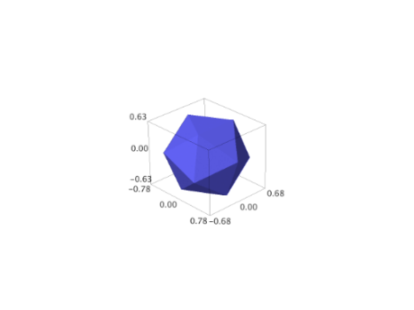 Two icosahedra at different positions of different sizes.
sage: p = icosahedron((-1/2,0,1), color='orange') sage: p += icosahedron((2,0,1), size=1/2, color='red', aspect_ratio=[1,1,1]) sage: p Graphics3d Object
>>> from sage.all import * >>> p = icosahedron((-Integer(1)/Integer(2),Integer(0),Integer(1)), color='orange') >>> p += icosahedron((Integer(2),Integer(0),Integer(1)), size=Integer(1)/Integer(2), color='red', aspect_ratio=[Integer(1),Integer(1),Integer(1)]) >>> p Graphics3d Object
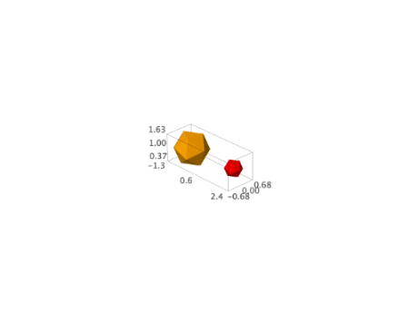
- sage.plot.plot3d.platonic.index_face_set(face_list, point_list, enclosed, **kwds)[source]¶
Helper function that creates
IndexFaceSetobject for the tetrahedron, dodecahedron, and icosahedron.INPUT:
face_list– list of faces, given explicitly from the solid invocationpoint_list– list of points, given explicitly from the solid invocationenclosed– boolean (default:Truefor these solids)
- sage.plot.plot3d.platonic.octahedron(center=(0, 0, 0), size=1, **kwds)[source]¶
Return an octahedron.
INPUT:
center– (default: (0,0,0))size– (default: 1)color– string that describes a color; this can also be a list of 3-tuples or strings length 6 or 3, in which case the faces (and oppositive faces) are coloredopacity– (default: 1) if less than 1 then is transparent
EXAMPLES:
sage: G = octahedron((1,4,3), color='orange') sage: G += octahedron((0,2,1), size=2, opacity=0.6) sage: G Graphics3d Object
>>> from sage.all import * >>> G = octahedron((Integer(1),Integer(4),Integer(3)), color='orange') >>> G += octahedron((Integer(0),Integer(2),Integer(1)), size=Integer(2), opacity=RealNumber('0.6')) >>> G Graphics3d Object
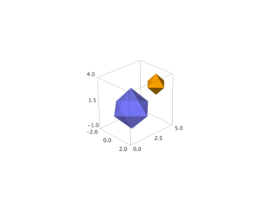
- sage.plot.plot3d.platonic.prep(G, center, size, kwds)[source]¶
Helper function that scales and translates the platonic solid, and passes extra keywords on.
INPUT:
center– 3-tuple indicating the center (default: the origin \((0,0,0)\), passed fromindex_face_set())size– number indicating amount to scale by (default: 1, passed fromindex_face_set())kwds– dictionary of keywords, passed from solid invocation byindex_face_set()
- sage.plot.plot3d.platonic.tetrahedron(center=(0, 0, 0), size=1, **kwds)[source]¶
A 3d tetrahedron.
INPUT:
center– (default: (0,0,0))size– (default: 1)color– string ('red','green', etc) or a tuple (r, g, b) with r, g, b numbers between 0 and 1opacity– (default: 1) if less than 1 then is transparent
EXAMPLES: A default colored tetrahedron at the origin:
sage: tetrahedron() Graphics3d Object
>>> from sage.all import * >>> tetrahedron() Graphics3d Object
A transparent green tetrahedron in front of a solid red one:
sage: tetrahedron(opacity=0.8, color='green') + tetrahedron((-2,1,0),color='red') Graphics3d Object
>>> from sage.all import * >>> tetrahedron(opacity=RealNumber('0.8'), color='green') + tetrahedron((-Integer(2),Integer(1),Integer(0)),color='red') Graphics3d Object
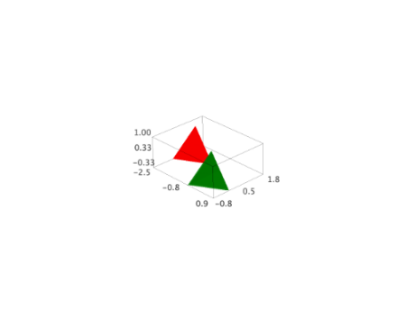 A translucent tetrahedron sharing space with a sphere:
sage: tetrahedron(color='yellow',opacity=0.7) + sphere(size=.5, color='red') Graphics3d Object
>>> from sage.all import * >>> tetrahedron(color='yellow',opacity=RealNumber('0.7')) + sphere(size=RealNumber('.5'), color='red') Graphics3d Object
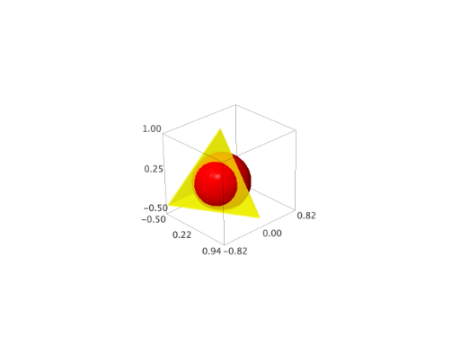 A big tetrahedron:
sage: tetrahedron(size=10) Graphics3d Object
>>> from sage.all import * >>> tetrahedron(size=Integer(10)) Graphics3d Object
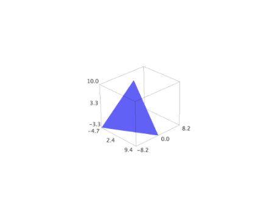 A wide tetrahedron:
sage: tetrahedron(aspect_ratio=[1,1,1]).scale((4,4,1)) Graphics3d Object
>>> from sage.all import * >>> tetrahedron(aspect_ratio=[Integer(1),Integer(1),Integer(1)]).scale((Integer(4),Integer(4),Integer(1))) Graphics3d Object
A red and blue tetrahedron touching noses:
sage: tetrahedron(color='red') + tetrahedron((0,0,-2)).scale([1,1,-1]) Graphics3d Object
>>> from sage.all import * >>> tetrahedron(color='red') + tetrahedron((Integer(0),Integer(0),-Integer(2))).scale([Integer(1),Integer(1),-Integer(1)]) Graphics3d Object
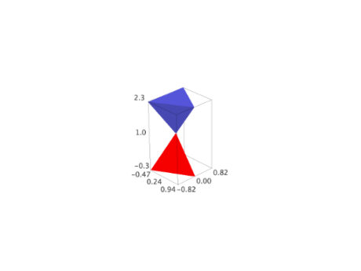 A Dodecahedral complex of 5 tetrahedra (a more elaborate example from Peter Jipsen):
sage: from math import pi sage: v = (sqrt(5.)/2-5/6, 5/6*sqrt(3.)-sqrt(15.)/2, sqrt(5.)/3) sage: t = acos(sqrt(5.)/3)/2 sage: t1 = tetrahedron(aspect_ratio=(1,1,1), opacity=0.5).rotateZ(t) sage: t2 = tetrahedron(color='red', opacity=0.5).rotateZ(t).rotate(v,2*pi/5) sage: t3 = tetrahedron(color='green', opacity=0.5).rotateZ(t).rotate(v,4*pi/5) sage: t4 = tetrahedron(color='yellow', opacity=0.5).rotateZ(t).rotate(v,6*pi/5) sage: t5 = tetrahedron(color='orange', opacity=0.5).rotateZ(t).rotate(v,8*pi/5) sage: show(t1+t2+t3+t4+t5, frame=False, zoom=1.3)
>>> from sage.all import * >>> from math import pi >>> v = (sqrt(RealNumber('5.'))/Integer(2)-Integer(5)/Integer(6), Integer(5)/Integer(6)*sqrt(RealNumber('3.'))-sqrt(RealNumber('15.'))/Integer(2), sqrt(RealNumber('5.'))/Integer(3)) >>> t = acos(sqrt(RealNumber('5.'))/Integer(3))/Integer(2) >>> t1 = tetrahedron(aspect_ratio=(Integer(1),Integer(1),Integer(1)), opacity=RealNumber('0.5')).rotateZ(t) >>> t2 = tetrahedron(color='red', opacity=RealNumber('0.5')).rotateZ(t).rotate(v,Integer(2)*pi/Integer(5)) >>> t3 = tetrahedron(color='green', opacity=RealNumber('0.5')).rotateZ(t).rotate(v,Integer(4)*pi/Integer(5)) >>> t4 = tetrahedron(color='yellow', opacity=RealNumber('0.5')).rotateZ(t).rotate(v,Integer(6)*pi/Integer(5)) >>> t5 = tetrahedron(color='orange', opacity=RealNumber('0.5')).rotateZ(t).rotate(v,Integer(8)*pi/Integer(5)) >>> show(t1+t2+t3+t4+t5, frame=False, zoom=RealNumber('1.3'))
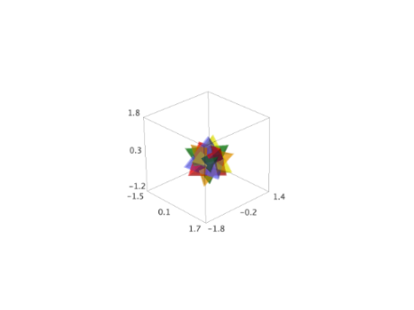 AUTHORS:
Robert Bradshaw and William Stein